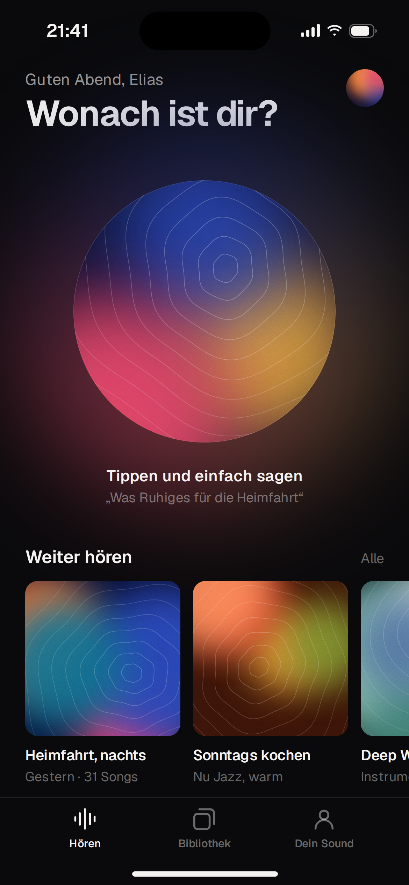
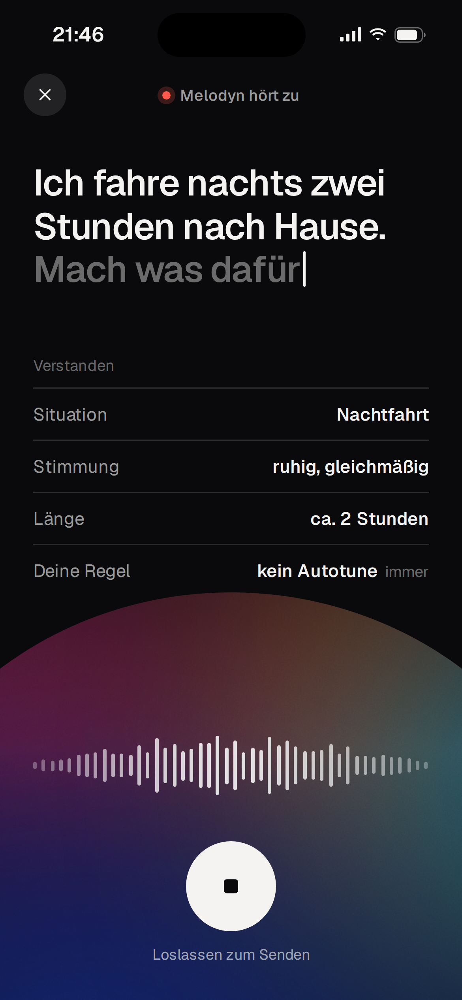
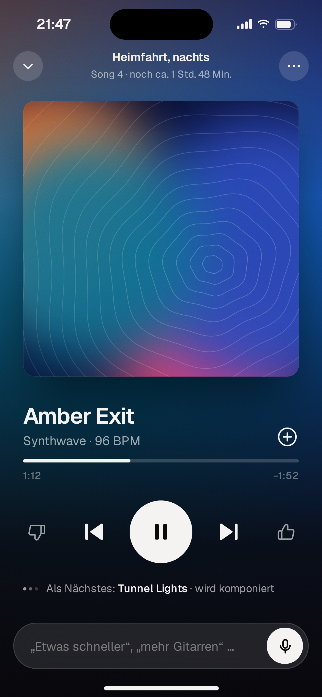
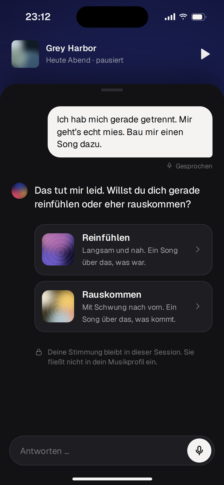
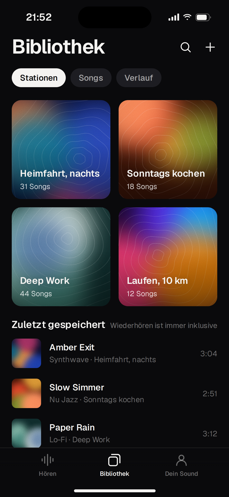
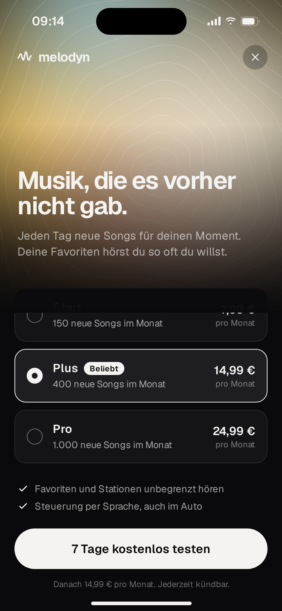
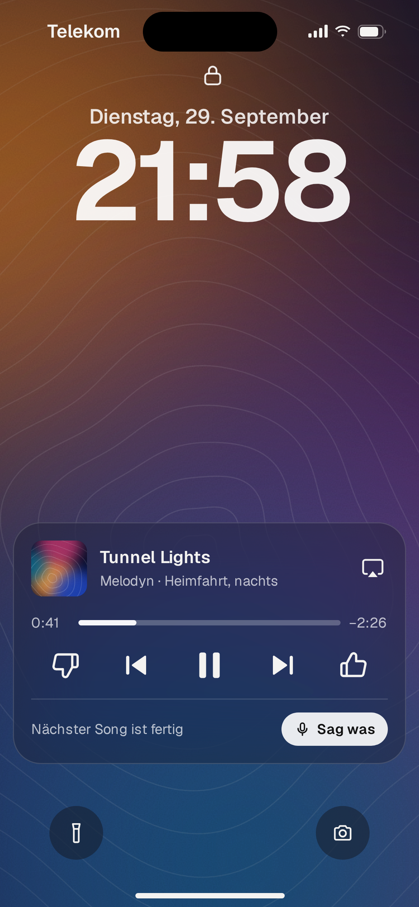

melodyn
App-Screens · Konzept v2 · September 2026

StartEin Satz reicht

ZuhörenMelodyn zeigt, was es verstanden hat

PlayerJeder Song hat sein eigenes Bild

GesprächEine Rückfrage, dann Musik

BibliothekStationen und Favoriten

Dein SoundSichtbar, was Melodyn gelernt hat

AboNeue Songs pro Monat

SperrbildschirmSteuern, ohne die App zu öffnen